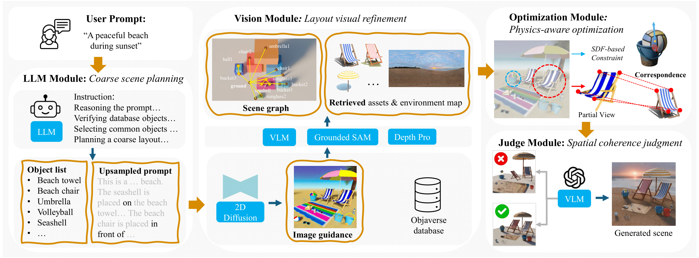

Pipeline
Starting with a user-provided text prompt, Scenethesis begins with a coarse scene planning stage, where a large language model generates a list of objects commonly found in the specified scene and selects one object as the primary object. Scenethesis then designs a coarse layout and produces a detailed prompt of the scene. In the layout visual refinement stage, a vision module first generates a detailed image, which serves as the guidance for layout optimization. The vision module then leverages different off-the-shelf vision models to extract a scene graph with predicted 5DoF poses for the initial scene setup and retrieves relevant 3D assets and an environment map. Next, a novel optimization module iteratively enforces accurate pose alignment and physical plausibility, preventing artifacts like object penetration and instability. Finally, a scene judge module verifies spatial coherence.
